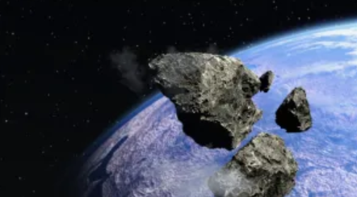

Quick consumer technology cards and summaries will appear here.
CT#5
Researchers at UC San Diego suggest marine cloud brightening could potentially weaken extreme El Niño events. The controversial geoengineering technique uses aerosols to make ocean clouds reflect more sunlight, cooling the surface below. Climate simulations showed targeted interventions could reduce El Niño impacts, though experts warn uncertainties, environmental risks and governance concerns require further research before real-world deployment.(Jul12,2026)
CT#4
OpenAI is shutting down its Atlas AI browser just nine months after launch, following cybersecurity concerns, slow agent performance and limited adoption. Atlas will stop working on August 9, 2026, as OpenAI shifts focus to upgraded Chrome extensions and its new ChatGPT Work platform, designed to automate complex office tasks across documents, spreadsheets, presentations and web applications.(Jul12,2026)
CT#3
Astronomers have directly detected a sugar molecule in interstellar space for the first time. Using radio telescopes in Spain, researchers identified erythrulose, a four-carbon sugar, within a molecular cloud near the Milky Way’s center. The discovery suggests complex organic compounds essential to life can form before stars and planets, offering new insights into the cosmic origins of life’s building blocks.(Jul13,2026)
CT#2
Google could switch from Samsung’s Exynos modems to MediaTek technology for its upcoming Tensor G6-powered Pixel 11 series. FCC documents for an unreleased foldable Pixel reference MediaTek radio-frequency software, supporting reports of a potential supplier change. The move could improve power efficiency and battery life, although real-world performance gains remain unconfirmed.(Jul11,2026)

CT#1
Chinese researchers have proposed a new planetary defence strategy that involves drilling deep into threatening asteroids before detonating nuclear devices inside them. Simulations suggest the approach could transfer more energy into the asteroid, improving fragmentation or deflection compared with surface explosions when sufficient warning time is available. The technique could enhance future asteroid defence capabilities.(Jul11,2026)